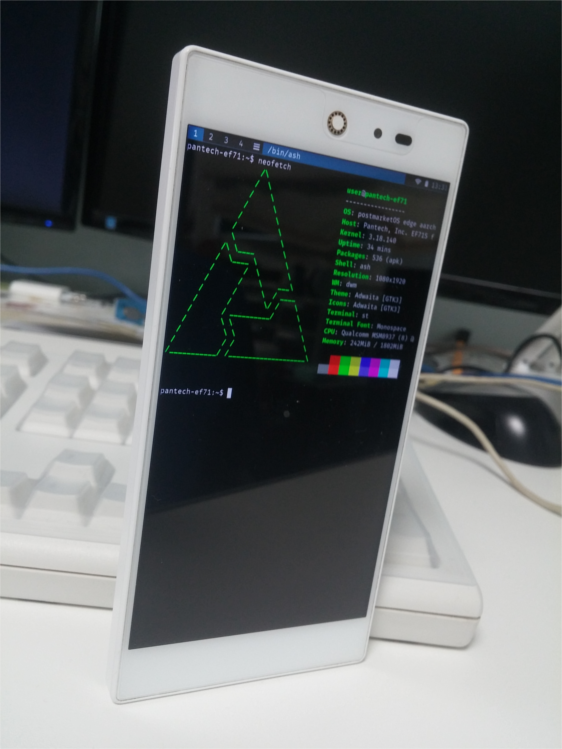

SKY I'm Back (pantech-ef71)
|
 IM-100 with sxmo | |
| Manufacturer | Pantech SKY |
|---|---|
| Name | I'm Back |
| Codename | pantech-ef71 |
| Released | 2016 |
| Category | testing |
| Original software | Android 6.0.1 |
| postmarketOS kernel | 3.18 |
| Hardware | |
| Chipset | Qualcomm MSM8937 Snapdragon 430 |
| Display | 1920x1080 LCD |
| Storage | 32GB |
| Memory | 2GB |
| Architecture | aarch64 |
{kind=link}
| USB Networking |
Broken
|
|---|---|
| Flashing |
Works
|
| Touchscreen |
Works
|
| Display |
Works
|
| WiFi |
Works
|
| FDE | |
| Mainline | |
| Battery |
Works
|
| 3D Acceleration |
Broken
|
| Audio |
Broken
|
| Bluetooth | |
| Camera | |
| GPS | |
| Mobile data |
Broken
|
| SMS |
Broken
|
| Calls |
Broken
|
| USB OTG | |
| NFC | |
| Accelerometer |
Broken
|
|---|---|
| Magnetometer | |
| Ambient Light | |
| Proximity | |
| Hall Effect | |
| Ir TX | |
|---|---|
| TrustZone | |
Contents
Contributors
- HexagonWin
Maintainer(s)
HexagonWin
Users owning this device
How to enter flash mode
If your bootloader is unlocked, when you boot it will prompt you to click the wheel key to enter Boot menu. If you don't have bootloader unlocked, turn the device off and click wheel key and power button simultaneousely to enter Boot menu. Navigate by clicking wheel key and select with the power key.
How to enter the Pantech Developer Menu
In the boot menu, there is a "Pantech Developer Menu". To enter this, it needs a password (Special key combinations). Click with wheel - power - wheel - wheel - power key, and it will show the pantech developer menu where you can see more info. (You can also enter Pantech's proprietary PDL-OS Download mode here)
How to re-lock device
You have to first flash IM-110's aboot, this is not recommended. This can even brick your device.
Installation
Fastboot installation works well, but sometimes fail for an unknown reason. Micro SD Card slot installation works well. You can also dualboot with android by installing pmOS on the micro sd card, and flashing pmOS and Android to each Recovery partition and the android boot partition.
Recovery zip installation was the most stable
Problems
For an unknown reason, the USB port does not work. You can only charge the phone, however OTG does not work and computer also does not detect it. According to a unofficial LineageOS, etc rom developer for this phone, it uses Pantech's codes for it, and needs to be changed to caf codes in the future. While the developer said that it can work with the kernel he made for cm-14, this is untested. pmOS is currently using lineage-16 kernel he made.
Device needs proprietary Qualcomm drivers from the stock firmware and the /vendor partition in the device, because the device uses Qualcomm Wireless Lan device inside it.
This device is not upstreamed yet, as I (HexagonWin) is being very busy.
Mainline?
The xiaomi-santoni device which has a similar Soc has some developed mainlining effort, however it is not in the torvald's tree and I (hexagonwin) do not know how to do this, so this isn't done yet.
See also